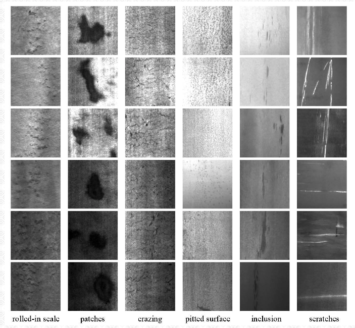
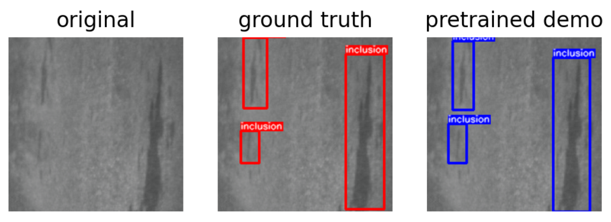
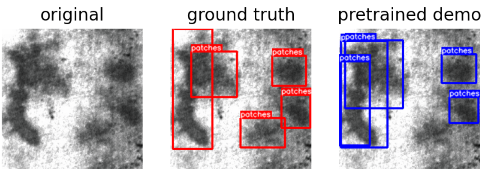
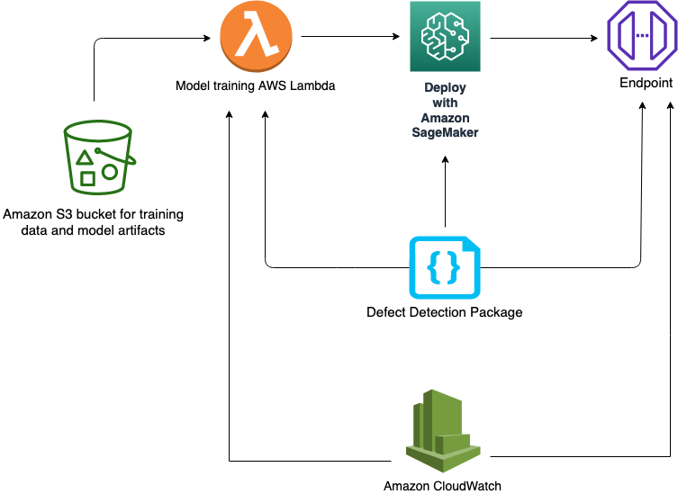

Visual Inspection Automation with Amazon SageMaker


This solution detects product defects with an end-to-end Deep Learning workflow for quality control in manufacturing process. The solution takes input of product images and identifies defect regions with bounding boxes. In particular, this solution uses an implementation of An End-to-End Steel Surface Defect Detection on NEU surface defect database (see references) in PyTorch using PyTorch-lightning.
Background
According to the Gartner, hyper-automation is the number one trend in 2020 and will continue advancing in future. When it comes to manufacturing, one of the main barriers to hyper-automation is in areas where Human involvements is still struggling to be reduced and intelligent systems have hard times to become on-par with Human visual recognition abilities and become mainstream, despite great advancement of Deep Learning in Computer Vision. This is mainly due to lack of enough annotated data (or when data is sparse) in areas such as Quality Control sections where trained Human eyes still dominates.
What is Visual Inspection?
The analysis of products on the production line for the purpose of Quality Control. Visual inspection can also be used for internal and external assessment of the various equipment in a production facility such as storage tanks, pressure vessels, piping, and other equipment (source) which expands to many industries from Electronics, Medical, Food and Raw Materials.
What are the Problems?
Some of the major problems are
Human Visual Error
Human visual inspection error is a major factor in this area. According to this report
Most inspection tasks are much more complex and typically exhibit error rates of 20% to 30% (Drury & Fox, 1975)
which directly translates to cost.
Cost
According to some estimate, a trained quality inspector salary varies between 26K (US) - 60K per year.
Getting Started
You will need an AWS account to use this solution. Sign up for an account here.
The easiest is to click on the following button to create the AWS CloudFormation Stack required for this solution
| AWS Region | AWS CloudFormation | ||
|---|---|---|---|
| US West | Oregon | us-west-2 |
|
| US East | N. Virginia | us-east-1 |
|
| US East | Ohio | us-east-2 |
|
Then acknowledge adding the default AWS IAM policy or use your own policy
- Click on the Create Stack
- Once the stack was created, go to the Outputs tab and click on the NotebookInstance link to directly go to the created notebook instance
- To see the demo, click on 0_demo.ipynb and follow the instructions
- Checkout 1_finetune.ipynb to finetune / resume training of the provided pretrained checkpoint
- Checkout 2_detection_from_scratch.ipynb to train a detector from scratch
- Finally, 3_classification_from_scratch.ipynb notebook, if you just need an accurate image classifier
What Does this Solution Offer?
This solution offers an implementation of the state-of-the-art Deep Learning approach for automatic Steel Surface Defect Detection using Amazon SageMaker. The model enhances Faster RCNN and output possible defects in an image of surface of a steel. The NEU surface defect database(see references), is a balanced dataset which contains
Six kinds of typical surface defects of the hot-rolled steel strip are collected, i.e., rolled-in scale (RS), patches (Pa), crazing (Cr), pitted surface (PS), inclusion (In) and scratches (Sc). The database includes 1,800 grayscale images: 300 samples each of six different kinds of typical surface defects
This solution trains a classifier on NEU-CLS dataset as well as a detector on NEU-DET dataset. Here is a sample images of the six classes

and here are the sample detection results


Contents
cloudformation/defect-detection.yaml: The root cloudformation nested stack which creates the AWS stack for this solutiondefect-detection-sagemaker-notebook-instance.yaml: Creates SageMaker notebook instancedefect-detection-permissions.yaml: Manages all the permission necessary to launch the stackdefect-detection-endpoint.yaml: Creates demo endpoint using in0_demo.ipynbsolution-assistant: Deletes the created resources such as endpoint, S3 bucket etc. during cleanup
src/prepare_data/: Data prepartion for NEU datasetssagemaker_defect_detection/: Main packagedataset: Contains NEU dataset handlingmodels: Contains the MFN model codeutils: Various utilities for visualization and coco evaluationclassifier.py: For classification taskdetector.py: For detection tasktransforms.py: Contains the image transformations used in training
notebooks/: All the notebooks described abovescripts/: Various scripts for training and building
Architecture Overview
The project
- Needs access to Amazon S3 for storing data and training artifacts
- Provides interactive training, evaluation and visualiztions of the results in the provided notebooks using Amazon SageMaker
- Deplying and testing an HTTPS endpoint
- Monitoring the deployed model via Amazon CloudWatch
Here is the visual architecture

Cleaning up
When you've finished with this solution, make sure that you delete all unwanted AWS resources. AWS CloudFormation can be used to automatically delete all standard resources that have been created by the solution and notebook. Go to the AWS CloudFormation Console, and delete the parent stack. Choosing to delete the parent stack will automatically delete the nested stacks.
Caution: You need to manually delete any extra resources that you may have created in this notebook. Some examples include, extra Amazon S3 buckets (to the solution's default bucket), extra Amazon SageMaker endpoints (using a custom name).
Customization
For using your own data, make sure it is labeled and is a relatively balanced dataset.
Useful Links
- Amazon SageMaker Getting Started
- Amazon SageMaker Developer Guide
- Amazon SageMaker Python SDK Documentation
- AWS CloudFormation User Guide
References
-
K. Song and Y. Yan, “A noise robust method based on completed local binary patterns for hot-rolled steel strip surface defects,” Applied Surface Science, vol. 285, pp. 858-864, Nov. 2013.
-
Yu He, Kechen Song, Qinggang Meng, Yunhui Yan, “An End-to-end Steel Surface Defect Detection Approach via Fusing Multiple Hierarchical Features,” IEEE Transactions on Instrumentation and Measuremente, 2020,69(4),1493-1504.
-
Hongwen Dong, Kechen Song, Yu He, Jing Xu, Yunhui Yan, Qinggang Meng, “PGA-Net: Pyramid Feature Fusion and Global Context Attention Network for Automated Surface Defect Detection,” IEEE Transactions on Industrial Informatics, 2020.
Security
See CONTRIBUTING for more information.
License
This project is licensed under the Apache-2.0 License.